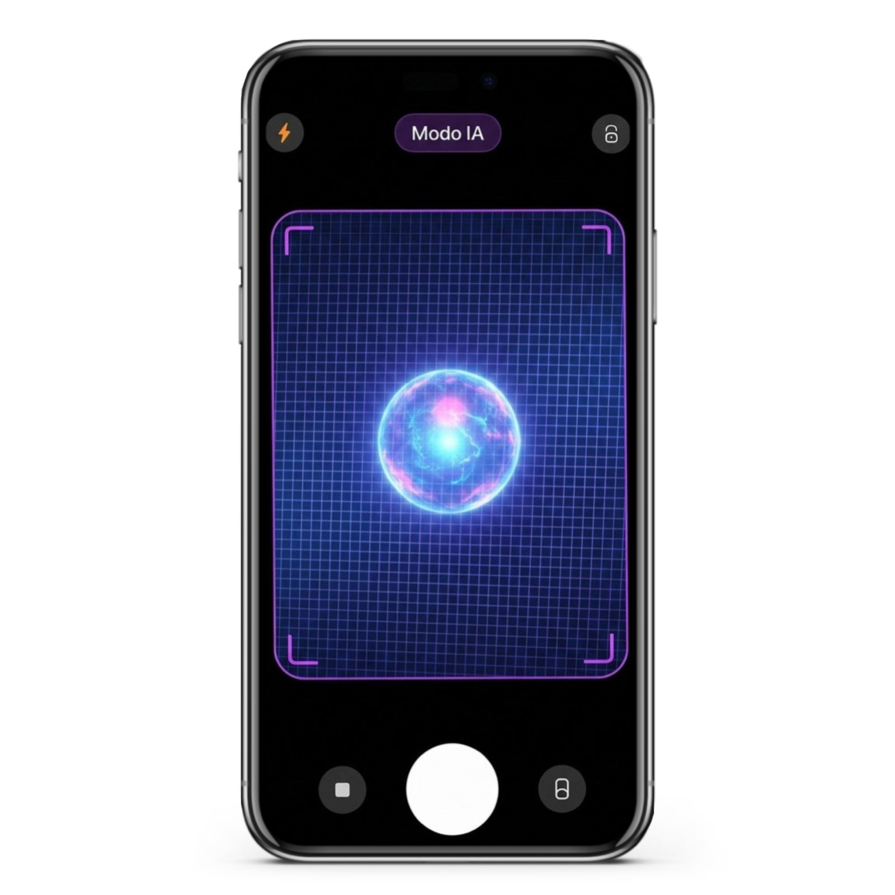

EM PARCERIA COM JOVI - CÂMERA NATIVA
A Vision Tech traz o Modo IA diretamente na câmera do seu dispositivo Jovi - ajustes automáticos, composição inteligente e qualidade profissional em cada disparo.

RECURSOS
Ajuste automático de exposição, contraste e nitidez em tempo real.
A IA identifica e sugere enquadramentos baseados nos principios fotográficos.
Fusões de múltiplas exposições processadas por IA para cenas com alto contraste.
Reconhecimento automático de ambientes: retrátil, paisagem, noite, comida, esporte — sem configuração manual
Desfoque de fundo com segmentação neural precisa, preservando fios de cabelo e bordas complexas.
Todo processamento acontece no dispositivo jovi. Nenhuma foto é enviada para servidores externos.
MODO IA
O Modo IA da Vision Tech analisa cada frame antes do disparo. Ele reconhece luz, sombra, temperatura de cor e movimento - e aplica correções que levariam minutos em edição, em fração de segundos.
ESPECIFICAÇÕES
Latência IA
Analise em tempo real
Processamento
100% local
Cenas reconhecidas
Por reconhecimento neural
Ajustes automaticos
Parametros simultaneos
VISION TECH
Vision Tech está disponivel nos dispositivos Jovi como app nativo. Sem instalação adicional - já vem com seu aparelho